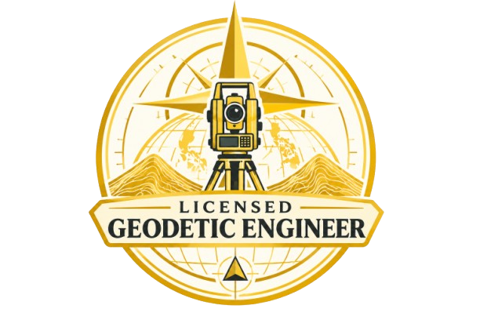
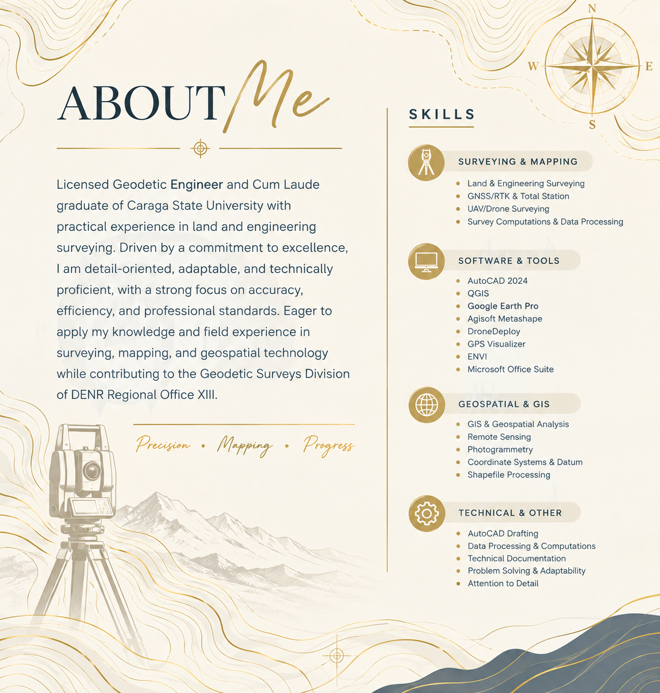
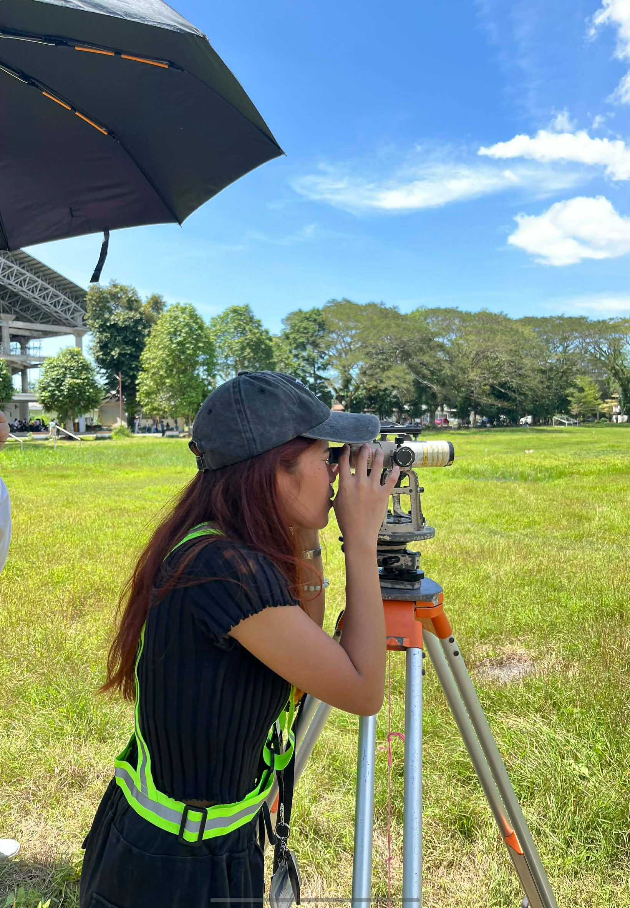
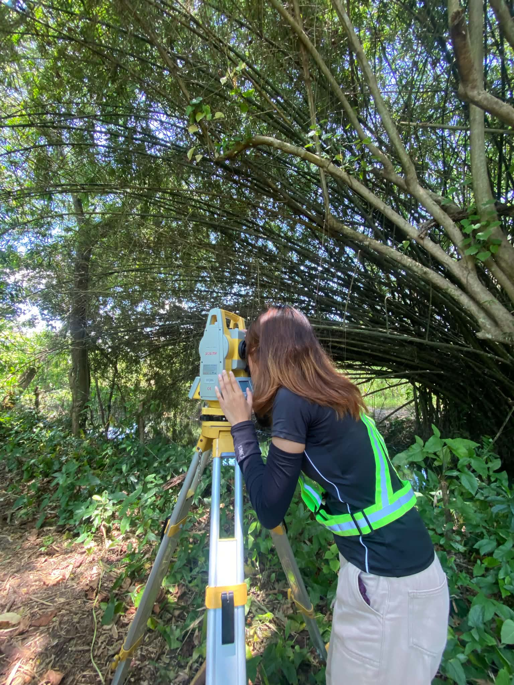

Measure Precisely. Map Intelligently. Shape Confidently.
Measure Precisely. Map Intelligently. Shape Confidently.
Engr. Joanna
Marie Tradio
My life as a geodetic engineer is a journey of learning where every measured point represents a lesson, every boundary a challenge, and every new direction a chance to grow

Licensed Geodetic EngineerCivil Service Eligible



![My Commitment: as a Geodetic Engineer, to deliver accurate, reliable, and meaningful spatial information that supports sustainable development, informed decision-making, and the responsible use of our land and natural resources. Accuracy — the highest standards of precision in every measurement, computation, and output. Professionalism — integrity, accountability, and professional ethics in all aspects of work. Continuous Growth — openness to learning, innovation, and new technologies and challenges in the field. Public Service — contributing skills and expertise to the Geodetic Surveys Division of DENR Regional Office XIII and the greater community. Sustainability — supporting land management and environmental protection through reliable geospatial information and responsible surveying practices. Precision today, a stronger tomorrow.](assets/commitment_main.png)